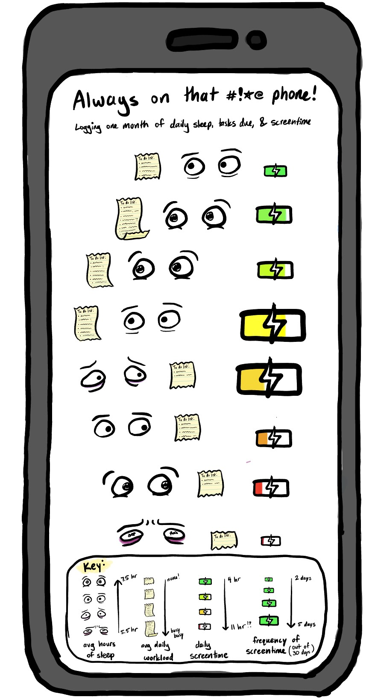

#installing packages
library(tidyverse)
library(here)
library(janitor)
library(flextable)
library(readxl)
library(ggplot2)
library(colorspace)
library(dplyr)
library(plotly) # JS plots!
library(DT) # JS tables!
library(leaflet) # JS maps!
library(leaflet.extras) # leaflet add-ons!
#create object screentime from my data
screentime <- read_xlsx(
here("posts", "screentime", "193DS_screentime_updated.xlsx"),
sheet = "Sheet1")Screentime Study
A study I conducted to identify the cause of my high screentime
In my Data Science class, we used R Studios to conduct our own study on a topic of our choice. My screentime had been abnormally high lately, and sometimes I felt like it was actually higher on days where I had things due. I wondered if this was in my head or a real stress response, and decided to see if I could find the root cause.
Set up
I am adding together five quantitative variables to calculate my perceived daily stress level including the number of classes skipped, number of tasks due, number of tasks done, number of plans cancelled, and number of hours slept(in comparison to 8 hours). I am comparing this daily self-imposed stress value to my daily screentime to look for correlations between the two values because sometimes I feel like high perceived stress pushes me to use my phone more to avoid tasks.
Representing my Data with a Plot
#create object screentime_clean
screentime_clean <- screentime |>
clean_names() |>
select(number_classes_skipped, number_tasks_due, number_hw_assn_done_1, number_plans_cancelled, x8_number_hrs_slept, stress_value, screen_time_h) |>
#renaming all of my columns
rename(
`classes skipped` = number_classes_skipped ,
`tasks due` = number_tasks_due,
`assignments completed` = number_hw_assn_done_1,
`plans cancelled` = number_plans_cancelled,
`8 - hours slept` = x8_number_hrs_slept,
`stress value` = stress_value,
`screentime(h)` = screen_time_h
) #change format of hours slept data- not using stress points anymore
screentime_altered <- screentime_clean |>
mutate(`hours slept` = 8 - `8 - hours slept`)
screentime_plot <- ggplot(screentime_altered,
aes(
x = `hours slept`,
y = `screentime(h)`,
color = factor(`tasks due`)
)) +
#create scatterplot, make cute
geom_point(
fill = "honeydew",
shape = 23,
alpha = 0.6,
size = 3,
stroke = 3
) +
#fixing my ink to data ratio B)
theme_minimal() +
theme(
panel.grid = element_blank(),
panel.border = element_rect(fill = NA),
plot.title = element_text(size = 10),
plot.margin = margin(t = 20, r = 10, b = 10, l = 10)
) +
#add title, axis labels, color key
labs(
title = "Negative Relationship Between Screentime and Hours Slept\nand Between Screentime and Number of Tasks Due",
x = "Hours Slept",
y = "Screentime (h)",
color = "Tasks Due"
) +
#adding jitter because I realized half of my data is hidden
geom_jitter(
height = 0.15,
width = 0,
shape = 23,
alpha = 0.6,
size = 3,
stroke = 3) +
#choose colors
scale_color_discrete_sequential(palette = "SunsetDark")
#make plot interactive
ggplotly(screentime_plot) Figure 1: Daily screentime appears to decrease on days with more responsibilities and proper sleep.
Daily screentime(h) obtained from “screentime” feature on iPhone. Daily sleep(h) estimated from last time picking up phone every night and first time every morning. Tasks due recorded daily, midterms and finals were counted as 2 tasks each. Points were recorded from 04/23/25 to 05/29/25 excluding 04/27 - 05/03 due to a lack of observations. Points represent daily observations of hours slept and hours of screentime (n = 30). The colors of the points transition from yellow, which represents days with zero tasks due, and darken to purple as daily tasks increase to four.
Representing my Data with a Table
#making obect with filtered variables, ordering data by screentime
screentime_cleaner <- screentime_altered[,c("tasks due", "hours slept", "screentime(h)")] |>
arrange(`screentime(h)`)
#making table's color scheme match my plot
set_flextable_defaults(
border.color = "#f8a07e",
background.color = "#ffefc4",
font.color = "#a059a0"
)
#create a table with the intended columns
screentime_table <- flextable(
screentime_cleaner,
col_keys = c("tasks due", "hours slept", "screentime(h)"),
cwidth = 2,
cheight = 0.25,
defaults = list(),
theme_fun = theme_booktabs,
use_labels = FALSE
) |>
#rename columns
set_header_labels(
`tasks due` = "Tasks Due",
`hours slept` = "Hours Slept",
`screentime(h)` = "Screentime(h)"
)
#displaying my interactive table
datatable(data = screentime_cleaner)Representing my Data with an Affective Visualization

Artists Statement:
I wanted to create a simple, creative visualization to represent my data. I’m organizing my piece by hours of screentime (4-11 hours) and using silly icons to show the average sleep and business that pertains to each hour of screentime. The data is organized by increasing screentime, with the bright green battery representing 4 hours and the bright red battery representing a whopping 11 hours. The size of the battery represents how many days involved that screentime and the length of the “To - do” list represents the average number of tasks recorded on days with the corresponding screentime. The “sleepiness” of the eyes represent the average hours of sleep I received on the night before days where I recorded the screentime. This is in the form of hand drawn cartoons that I created on Notability.
I found that my suspicion of higher screentimes on busier days was not proven by my data, which indicated the opposite. I am very glad I conducted this study because not only did I learn to explore and present data, but I was relieved by my results. I’m also sick of the word screentime, and a bit concerned that two days involved an average of 11 hours.